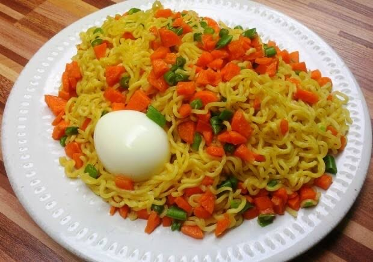

Noodles Recipe

Description
An exquisite noodle recipe made from scratch with tomatoes, pepper and onions. Add some seasoning to accentuate the flavour.
Ingredients
- Noodles
- A serving spoon of groundnut oil
- A small onion bulb
- A table spoon of tomato sauce
- Pepper(either fresh or processed)
- A tin of sardine or geisha
- Carrots
- An egg
Steps
- Boil the egg for 15mins
- Place your pot on the cooker at full heat
- Put the grpundnut oil in the pot for 45secs
- Chop up the onion and put it in
- Immediately follow up with the tomato sauce
- Let it fry till it seems to be bubbling up when you pick it up with your spoon
- Put in the noodles
- Add an appropriate amount of water relative to the amount of noodles being prepared
- Chop up the carrot, put in the pot and let it boil for a minute
- Put in the seasoing powder if your noodle pack comes with one but if it doesn't, use seasoning cubes. A seasoning cube per noodle pack should suffice
- Stir the whole mixture and let it simmer for a while
- Add the tin of sardine or geisha(I prefer geisha) and stir
- Let it simmer till you attain your desired amount of moisture in the noodles
- Dish it out with the egg and gorge yourself because you deserve it